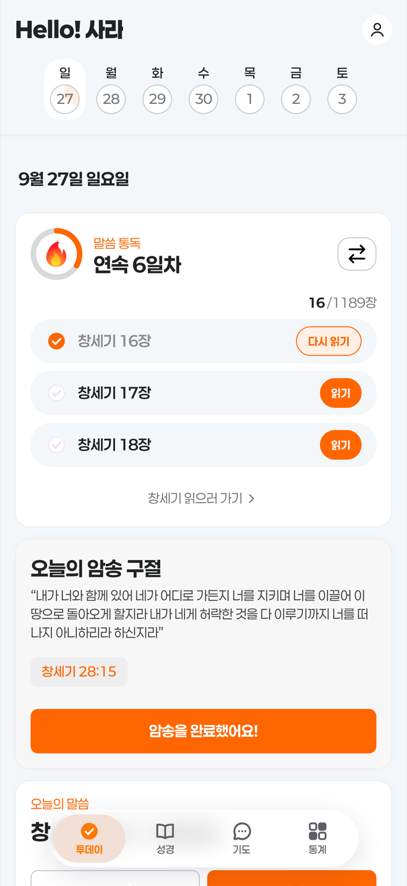
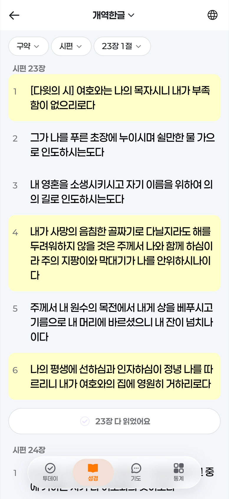
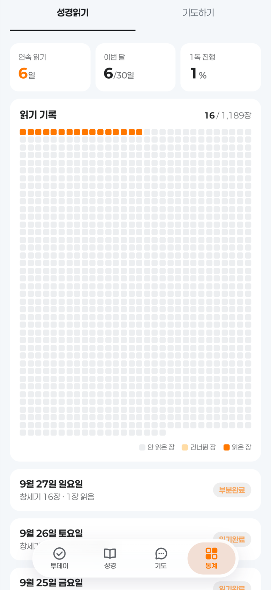
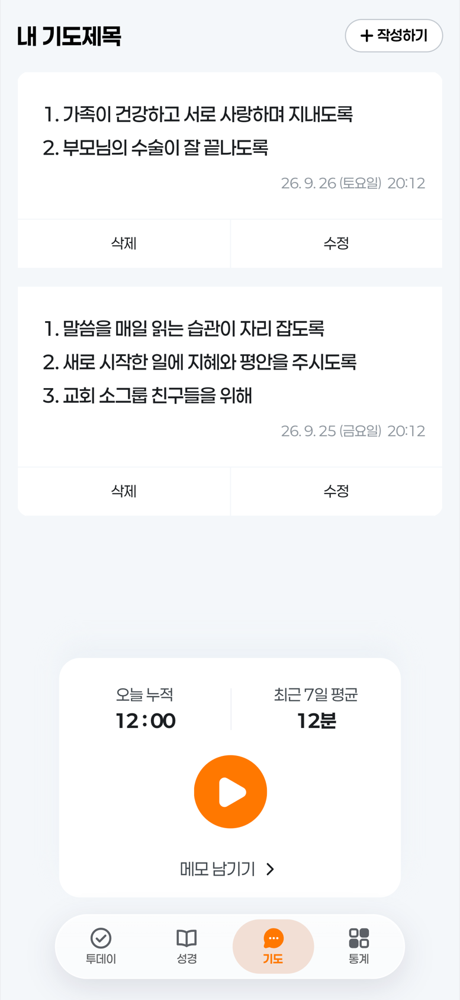

와디바이블
매일 아침, 말씀 한 걸음
성경 통독을 습관으로 만들어 주는 아이폰 앱입니다.
아침에 알림이 오면 오늘 읽을 분량을 열어 읽고, 읽은 날이 기록으로 쌓입니다.




- 아침에 알림 한 번정한 시각에 오늘 읽을 분량과 암송 구절을 함께 보내 드려요.
- 내 속도로하루 1장 · 3장 · 자유롭게 읽기 가운데 고르고, 언제든 바꿀 수 있어요.
- 인터넷 없이 읽혀요개역한글 66권 1,189장과 영문 King James Version이 앱 안에 들어 있어요.
- 읽은 만큼 쌓여요성경 1,189장이 한 칸씩 채워지고, 연속으로 읽은 날이 기록으로 남아요.
- 칠하고 옮겨 적기마음에 닿은 절을 눌러 칠하고, 복사해 옮길 수 있어요. 회차마다 색이 달라져요.
- 기도제목과 기도 시간기도제목을 적어 두고, 기도한 시간을 기록해요. 주별 · 월별로 돌아볼 수 있어요.
- 로그인 없이도게스트로 바로 시작할 수 있어요. 나중에 계정을 연결하면 그동안의 기록이 함께 옮겨가요.
약관
- 개인정보 처리방침어떤 정보를 받고, 어디에 두고, 어떻게 지우는지
- 이용약관서비스를 쓰는 조건과 운영자·이용자의 권리
- 이벤트·혜택 소식 받기선택 동의 항목의 전문
- 기도문·기도 메모 계정 저장선택 동의 항목(민감정보)의 전문
만드는 곳
- 상호
- 와디
- 대표자
- 정사라
- 사업자등록번호
- 622-14-76141
성경 본문
개역한글판과 영문 King James Version(1769)은 저작권 보호 기간이 끝난 번역본입니다. 본문은 고치지 않고 그대로 싣습니다.